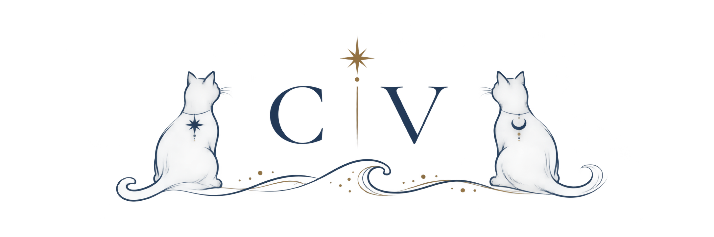
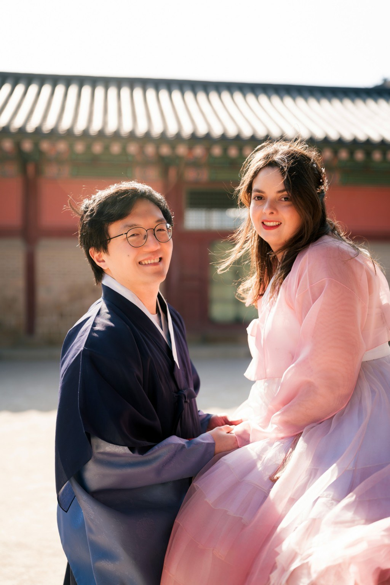

NOSSA CELEBRAÇÃO
A celebração
Quatro dias para estarmos juntos e celebrar o amor.
✧
← Voltar ao início
Conteúdo desta página será desenvolvido na próxima etapa.

Cris & Vini
CRIS & VINI · 2027
Quatro dias para estarmos juntos e celebrar o amor.
NOSSA CELEBRAÇÃO
Quatro dias para estarmos juntos e celebrar o amor.
Conteúdo desta página será desenvolvido na próxima etapa.